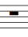
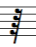
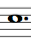
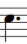
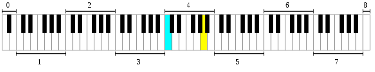

Table of contents
- Notes ( )
- Staves
(
 )
) - Ledger lines ()
- Clefs ( )
- Value of notes (duration of )
- Tuplets
(
 )
) - Rests (  )
- Ties ( )
- Dots (  )
- Transpositions/Accidentals
(
 )
) - Bars
- Time signature
(
 )
) - Tempo
- Dynamics ( )
- Scales/modes (
 )
) - Left hand fingering (1, 2, 3, 4)
- Right hand fingering (p, i, m, a)
- String indication ()
- Left hand position (I, II, II, IV, ...)
- International pitch notation
- Tuning
Elements of music notation for guitar
Notes
The signs for the tones in music are called notes. There are seven of them, named c, d, e, f, g, a, b. If a passage embraces eigth, nine or more such notes in succession, these names are repeated in the same order. In descending their order is reversed, namely: b, a, g, f, e, d, c.
A note indicates both its pitch and its duration (how long it lasts).
Each note consists of a notehead (either open or filled) and may also have a stem and a beam or flag.
The notes stand partly on and partly between five horizontal, parallel lines, called the stave; the lines and spaces are reckoned upwards.
Staves
Ledger lines
If notes go so high or so low that there is not room for them on this stave, use is made of little ledger line or leger lines, on which, or between which, these notes are put.
Clefs
In order to decide the names of the notes, and to be able to distinguish for what voice a piece of music is intended, we emply three kinds of signs or clefs: the G or violin clef , the C clef , and the bass or F clef .
These clefs are placed on different lines, and the notes on those lines are named accordingly.
For the guitar, however, only the G clef is used; it stands on the second line of the stave, and accordingly the notes for the guitar are :
The easiest way of remembering the notes is first to take the notes on the lines
then those in the spaces
then those below the stave
and finally those above the stave.
Value of notes
In music use is made chiefly of seven kinds of notes, the value or duration of which is signified by their different forms. They are :
| Semibreve | Minim | Crotchet | Quaver | Semiquaver | Demisemiquaver | Semidemisemiquaver |
The relative values of these notes are:
| 1 semibreve | |
| is equal to | |
| 2 minims | |
| 4 crotchets | |
| 8 quavers | |
| 16 semiquavers | |
| 32 demisemiquavers |
Tuplets
There are further groups of three and six notes each, and they have a figure 3 or 6 above them, and are called triplets, or sextolets.
Triplets take up the time of 2 notes of their own kind ;
while sextolets take up the time of four of their kind .
Rests
There are likewise seven kinds of rests in common use, and like notes their value is indicated by their form.
| Semibreve rest | Minim rest | Crotchet rest | Quaver rest | Semiquaver rest | Demisemiquaver rest | Semidemisemiquaver rest |
There are rests of 2 and 4 bars each, thus
Ties
In music notation, a tie is a curved line , connecting the heads of two notes of the same pitch, indicating that they are to be played as a single note with a duration equal to the sum of the individual notes' values.
Dots
A dot after a note or rest increases its length by half.
Consequently a semibreve and a dot are worth that is three minims;
a dotted minim is worth three crotchets
a dotted crotchet is worth three quavers
etc.
The relation is the same for rests, so is equal to
and is equal to
A second (, third, fourth, ...) dot after a note or rest with a dot increases its length by an additional quarter (, eight, sixteenth, ...) of the note's duration.
Transpositions/Accidentals
There are three signs of transposition, namely the sharp (), the flat () and
the natural ().
The sharp will raises the note before which it stands a semitone,
where as the flat () lowers the note before which it is placed a semitone,
while the natural () restores it to its original pitch from which it had been removed by the sharp or flat.
If a sharp or flat is be placed at the beginning of a piece next to the clef, it is called essential, and alters all the notes on that line or in that space
throughout the whole piece.
But if a sharp or flat occur in the course of a piece before a note, it is called an accidental and it holds good only for the bar in which it occurs.
There are also double sharps () which raise an already sharpened note another semitone, or if it be not already
sharpened, the double sharp raises it a whole tone; the double flat () lowers the note it precedes a semitone if
it be already lowered one; or if not, then a whole tone.
If a sharp or flat is placed at the beginning of a piece next to the clef, it is called essential and alters all the notes on that line (and all equivalent notes one or more octaves higher or lower) or in that space throughout the whole piece.
Bars
Music is divide into bars (each having the same relative duration), which are separated from each other by perpendicular lines across the staves (also these lines are called bars or barlines)
Time signature
The (relative) duration of a bar is indicated by a time signature.
A time signature is placed after the clef and (key) signature (see Scales).
Simple common time has either four crotchets in a bar and is marked or else two minims, which latter is called Alla breve time and is marked in the signature by or .
Another way is to indicate the number and duration of notes by two numbers above each other. The lower digit indicates the note duration (semibreve, minim, crotchet a.s.o.), the upper number indicates the number of notes in a bar, like:
- : 3 minims
- : 4 crotchets
- : 6 semiquavers
Tempo
Tempo is the speed at which a piece is played. Mostly tempo is indicated at the start of a piece.
One way is to specify the beats per minute (or bpm).
Another way is by use of common markings.
The beats per minute (bpm) values are very rough approximations and vary widely according to composers and works.
The exact sense of many of these terms has changed over time.
| Marking | Description | BPM |
|---|---|---|
| Larghissimo | extremely slow | 24 or less |
| Adagissimo | very slow | 24-40 |
| Grave | very slow and solemn | 24–40 |
| Largo | slow and broad | 40–66 |
| Larghetto | rather slow and broad | 44–66 |
| Adagio | slow with great expression | 44–68 |
| Adagietto | slower than andante or slightly faster than adagi | 46–80 |
| Lento | slow | 52–108 |
| Andante | at a walking pace, moderately slow | 56–108 |
| Marcia moderato | moderately, in the manner of a march | 66–80 |
| Andante moderato | between andante and moderato | 66–112 |
| Allegretto | by the mid-19th century, moderately fast | 76–120 |
| Andantino | slightly faster than andante, but slower than moderato | 80–108 |
| Moderato | at a moderate speed | 86–126 |
| Allegro moderato | close to, but not quite allegro | 96–120 |
| Allegro | fast and bright | 100–156 |
| Molto Allegro | very fast and bright | 124–160 |
| Allegro vivace | very fast and bright | 124–160 |
| Vivace | lively and fast | 136–160 |
| Vivacissimo | very fast and lively | 160–184 |
| Allegrissim | very fast and bright | 160–184 |
| Presto | very fast | 168–200 |
| Prestissimo | extremely fast | 200 or more |
Dynamics
Dynamic markings of a piece specify the variation in loudness between notes or phrases.
Dynamic markings are always relative and never indicate a precise level of loudness.
Scale of dynamic markings
| Name | Letters | Level |
|---|---|---|
| pianississimo | ppp | very very quiet |
| pianissimo | pp | very quiet |
| piano | p | quiet |
| mezzo-piano | mp | moderately quiet |
| mezzo-forte | mf | moderately loud |
| forte | f | loud |
| fortissimo | ff | very loud |
| fortississimo | fff | very very loud |
Three Italian words are used to show gradual changes in volume:
- crescendo (abbreviated cresc.) translates as "increasing" (literally "growing")
- decrescendo (abbreviated to decresc.) translates as "decreasing"
- diminuendo (abbreviated dim.) translates as "diminishing"
Signs sometimes referred to as "hairpins" are also used to stand for these words.
Scales
A scale is any set of musical notes ordered by fundamental frequency or pitch.
The most common modern Western scales have 7 notes per octave.
To alter a scale a key-signature is used to indicate which notes have to be changed.
In the key-signature at the beginning of a line (or measure if there are key-changes within the piece) one puts the sharps or flats up to seven in the following order:
f, c, g, d, a, e, b for sharps:
b, e, a, d, g, c, f for flats:
A mode is a type of musical scale coupled with a set of characteristic melodic and harmonic behaviors.
Most used modes nowadays are major and minor mode. Every major mode has it's relative minor mode and the latter is always a minor third lower than the former.
The following twelve major and minor modes are in general use:
no sharps or flats:
with sharps:
with flats:
Left hand fingering
To play a note on guitar, a left-hand finger presses a string behind a fret (or none if playing an open string).
Left hand fingering indicates the finger used to press the string to get the desired note.
|
Example (Fernando Sor - Op. 35 Vingt quatre exercices très faciles - No. 1 Andante) :
Right hand fingering
Right hand fingering indicates which finger is used to create the sound.
|
Example (Romance - Anonyme):

String indication
To indicate to play a note on a certain string a number inside a circle is used (normally above or below that note) :
The thinnest (highest sounding) string is indicates with 1, the thickest (lowest sounding) string with 6.
Example (Francisco Tárrega - Adelita):
Left hand position
To indicate the left hand position on the neck Roman numerals are used, sometimes preceded by B or C (barre), or ½ B or ½ C (partial barre).
The two abbreviations "B", "C", represent the terms barre or bar, cejillo or capotasto.
A barre is a technique by using one finger to press down multiple strings across a single fret.
A full barre presses all strings, a partial barre a part of all the strings.
Roman numerals without the "B" or "C" indicates fingerboard position only, with
I: first fret, II: second fret, ...
Example (Matteo Carcassi - Op. 60 Vingt cinq études mélodiques et progressives - No. 1 Allegro):
International pitch notation
International pitch notation concerns only how pitch names are notated, that is, how they are designated in printed and written text, and does not inherently specify actual frequencies.
Thus, the use of scientific pitch notation to distinguish octaves does not depend on the pitch standard used.
The notation makes use of the traditional tone names (A to G) which are followed by numbers showing which octave they are part of.
For standard A440 pitch equal temperament, the system begins at a frequency of 16.35160 Hz, which is assigned the value C0.
Ten Cs in scientific pitch notation

An 88-key piano, with the octaves numbered and Middle C (cyan) and A440 (yellow) highlighted.
Tuning
The standard tuning for guitar is (from lowest to highest sounding string):
E2, A2, D3, G3, B3, E4
See the table of note frequencies.
Sound:
Notation:
The 8 below the clef is indicating that the sound is an octave lower than the notation indicates.
Often the 8 below the clef omitted in scores for guitar.